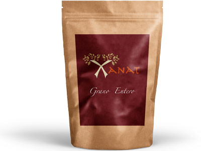
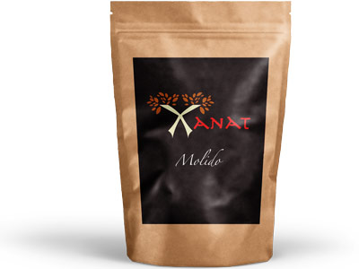
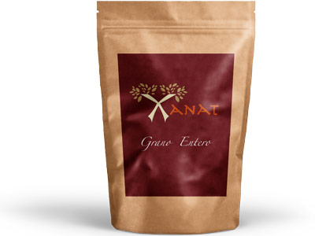
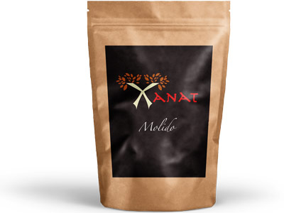

Bolsa de café de 100 gramos
Bolsa de café de 250 gramos
Bolsa de café de 1000 gramos

Café Xanat es producido por cafeticultores que enaltecen las raíces y tradiciones.
xanat.
Café de variedad arábiga, de granos selectos de primera calidad, aromático y de baja acidez. Proviene de la Sierra Norte de Veracruz que forma parte del Totonacapan.
En 4 líneas de producto que se comercializan en 3 presentaciones:
Bolsa de café de 100 gramos
Bolsa de café de 250 gramos
Bolsa de café de 1000 gramos
Conoce lo que hay detrás de cada
taza de Café Xanat
Xanath café es el proyecto de vocación productiva que desarrollado por Magtayani A.C. en el cual se busca generar sustentabilidad mediante la formación líderes cafeticultores de la región del Totanacapan.
Inclusión Social.
Reactivación del cultivo de
café en la región.
Inclusión Social.